Use Case
Cloud is all saving cost. Instead of buying the hardware and the software, we can use them on a need only a basis from the CSP (Cloud Service Provider), in this case AWS. As part of the well architected framework AWS provides some of the best practices around the cost savings in the Cloud.
One of the approaches around the cost saving is use EC2 Spot Instances which come at a discounted price of about 70% when compared to the OnDemand Instances. This is a huge opportunity for cost saving, but Spot Instances can be terminated with a two-minute notice under certain conditions. In such a scenario then application on the EC2 instance in this case the web page is not accessible.
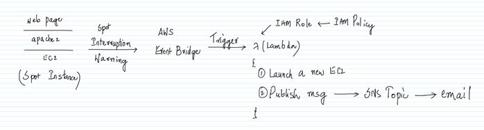
One way to get around this problem is get notified via the ‘Spot Interruption Warning’ event in the AWS Event Bridge and call a Lambda function which will automatically start another EC2 instance in place of it. Along the way, the event will also publish a message to the SNS Topic which will send an email.
The only problem with this approach is that it might take about 1-2 minutes by the time the event is captured by the AWS Event Bridge and the Lambda starts another EC2. This is OK in the case of the development, but not in the case of the Production where a downtime is not expected. In the case of the production where HA (High Availability) is expected, we should be able run multiple EC2 instances at the same time and front them using an ELB, if one of the ELB goes down then the rest of the EC2 instances can take the load002Eu
Another thing which needs to be taken care is that when a new EC2 is started, the Public IP address of the EC2 might changes and all the individuals who are accessing the web site via the IP address need to be notified. The same can be avoided by using an Elastic IP. This makes sure that the Public IP address of the EC2 is not changed when a new EC2 is started by the Lambda. This way the transition to the new EC2 is seamless.
Also, the web page also needs to be deployed on the new EC2 instance. The same can be done by using the AMI (Amazon Machine Images).
AWS Services: AWS Well Architected Framework, EC2, Lambda, IAM, SNS, Event Bridge
-- Navigate to the EC2 Management Console and go to the Launch templates tab. Click on `Create launch templates`.
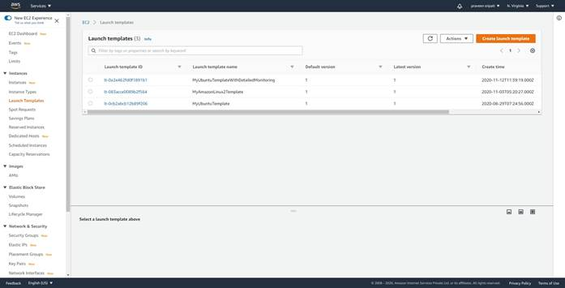
-- Give a name, description and under the AMI select Ubuntu 18.04.
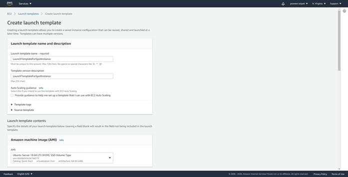
-- For the instance type select `t2.micro`. Select the appropriate keypair and security group. We are not going to connect to the EC2 instance as part of this exercise, so it doesn’t matter what we select for the keypair and security group.
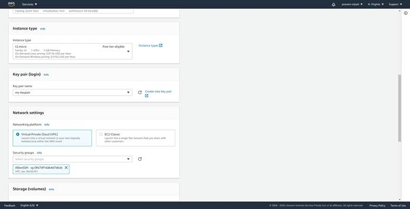
-- Make sure to add `Restart` as the Resource tag. The value can be empty.
Click on `Create launch template`. Note that the tags are case sensitive.
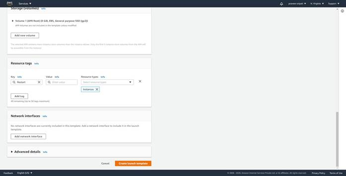
-- Navigate to the SNS Management Console and give the Topic a name and click on `Next step`.
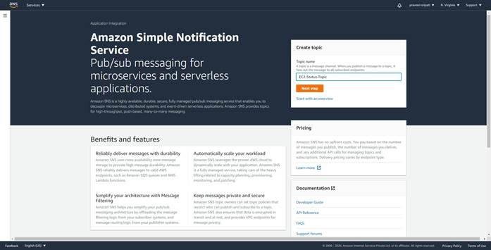
-- Go with all the default options and create the Topic.
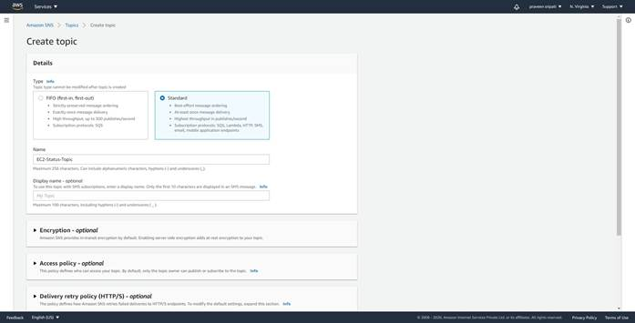
-- Click on `Create subscription`.
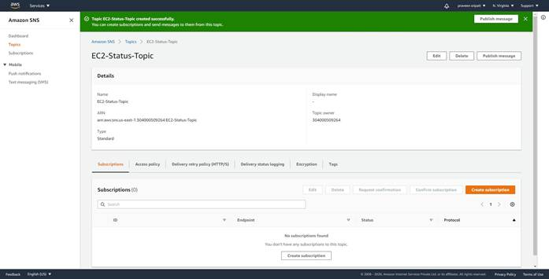
-- Select the Email as the Protocol and enter a valid email. Click on `Create subscription`.
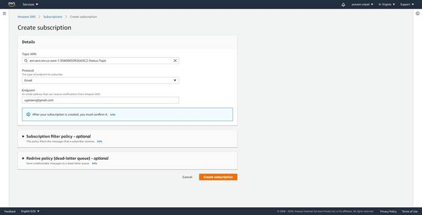
-- Initially the subscription would be in a pending status.

-- AWS would be sending an email with a link, click on the link to confirm the
subscription.
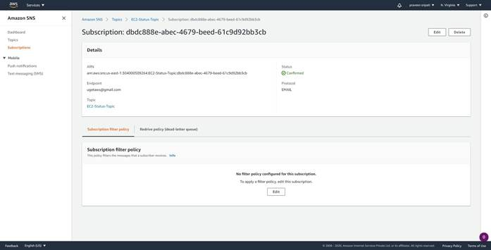
-- Navigate to the IAM Management Console and to the Roles tab.
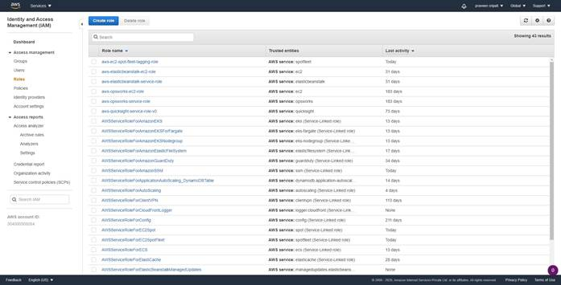
-- Select the Lambda as the service. Click on `Next Permissions`.
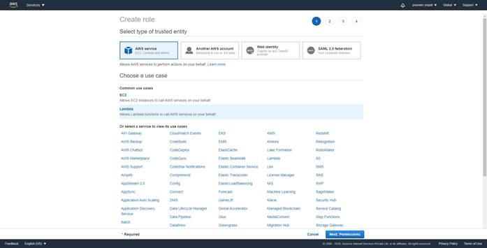
-- One after another select the below policies.
-
AmazonEC2FullAccess
- AWSLambdaBasicExecutionRole
- AmazonSNSFullAccess
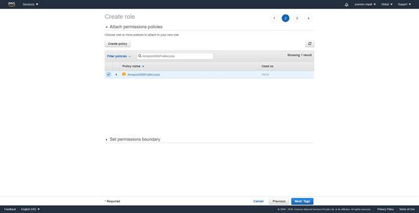
-- Give the Role a name and click on `Create role`.
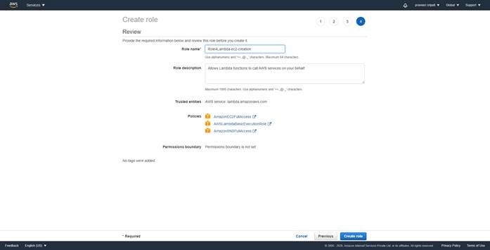
-- Navigate to the Lambda Management Console and click on `Create Function`.
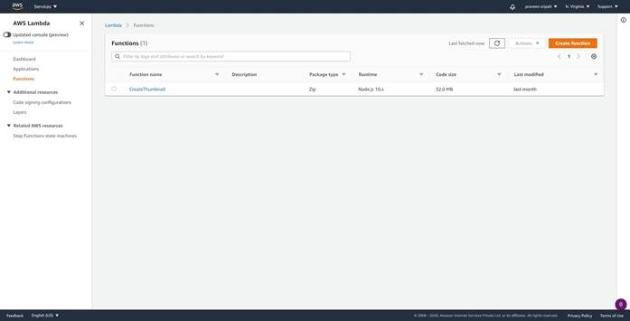
-- Give the function a name. Select Python 3.6 as the platform. For the Lambda
select the earlier created role as shown below.
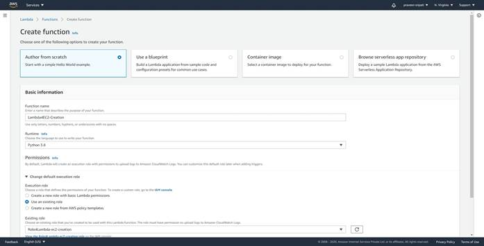
-- Click on `Create Function`.
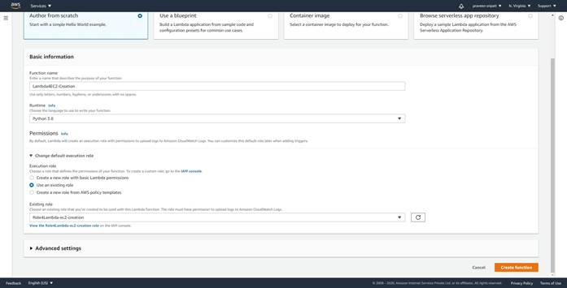
-- Replace the code with the below code. Make sure to replace the key pair,
security group, AMI-ID and the SNS Topic ARN.
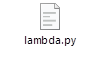
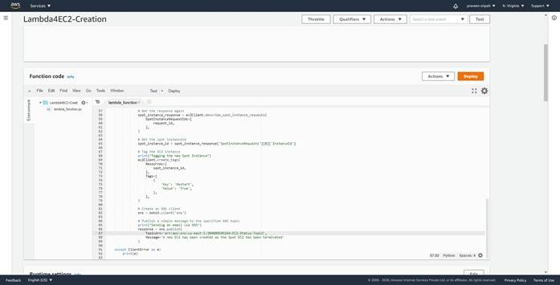
-- Under the `Basic settings`, click on Edit.
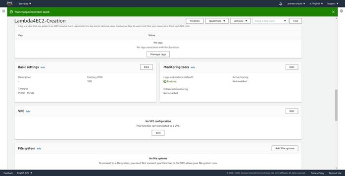
-- Change the Timeout to 15 sec and click on Save. Finally, deploy the Lambda function.
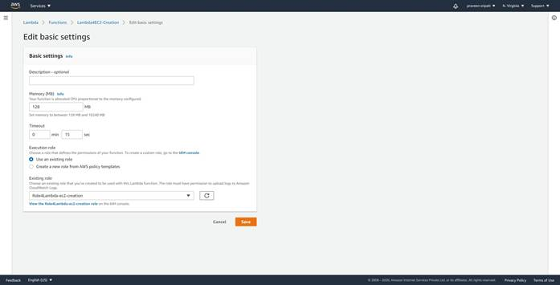
-- Navigate the EventBridge Management Console and click on `Create rule`.
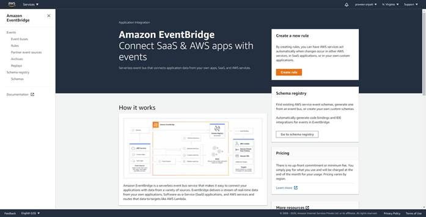
-- Give the rule a name. Select `Event Pattern` and `Pre-defined pattern by
service`.
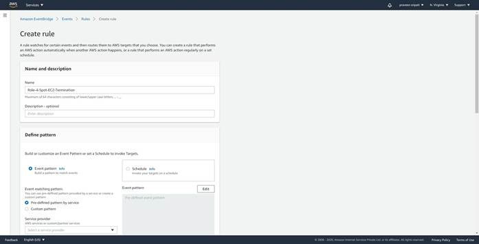
-- For this exercise, the right option is select the Event Type as `EC2 Spot Instance Interruption Warning`. But there is no time frame when a Spot Instance is terminated by AWS, it might take a few minutes to hours. And we can’t wait for so much time.
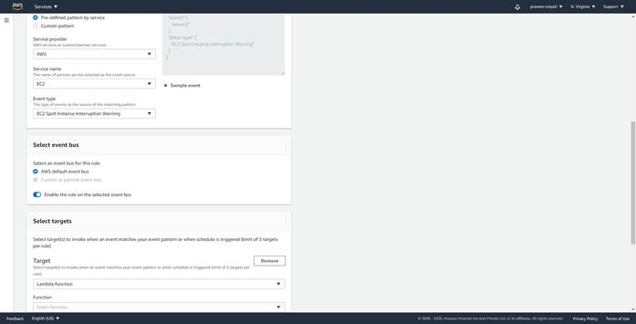
-- As a work around, select the service provider as `AWS`, Service name as `EC2` and event type as `EC2 instance State-change Notifications`. Make sure it exactly matches as below.
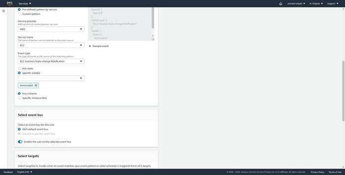
-- For the targets select the Lambda function created in the previous step and click on `Create`.

-- Navigate to the EC2 Management Console and to the `Spot Requests` tab. Click on `Request Spot Instances`.

--
Select the Launch Template created in the previous step. For the rest, go with
the default options and click on Launch.
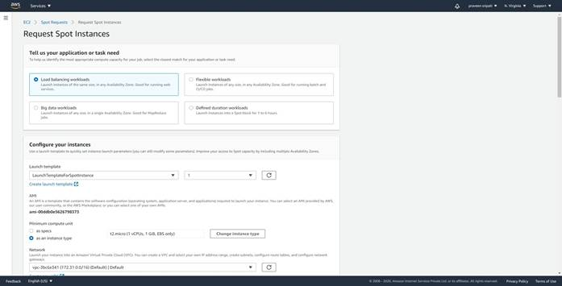
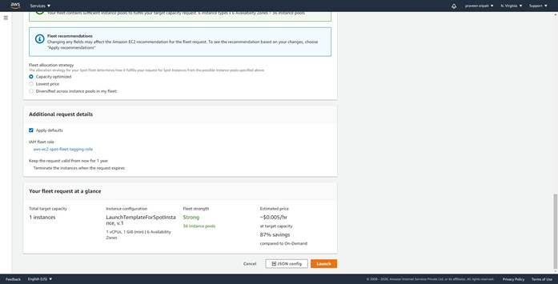
-- Wait for a few minutes and the status of the requests will become active and a new EC2 would be created. Make sure the Capacity is `1 of 1` for the fleet.
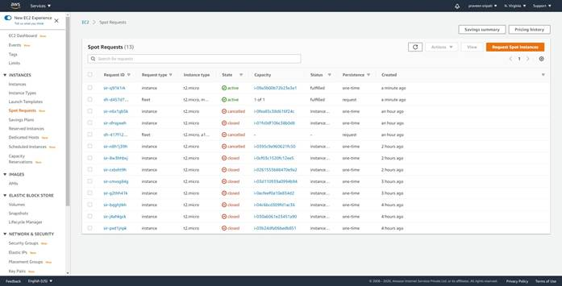
-- Navigate to the instances tab and there would be an EC2 in the running
state.
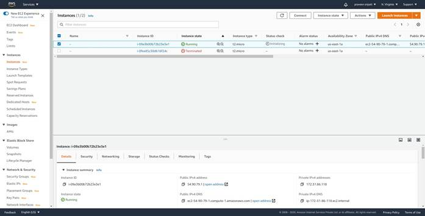
-- Usually, if the Spot price increases above your bid price, capacity is no longer available, or the spot request has constraints that can't be met, then the Spot Instance can be terminated. As this is dynamic, we won’t be able to predict when this can happen. So, ahead and terminate the EC2.
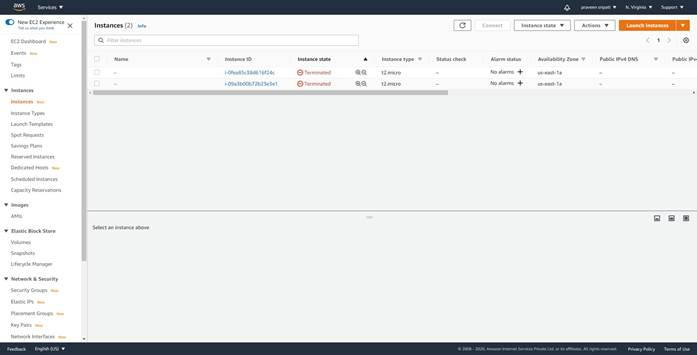
-- Notice that in a few minutes a new EC2 would be started. This would have a different Instance ID. The termination can be done a couple of times and each time automatically a new EC2 is created by the Lambda function.
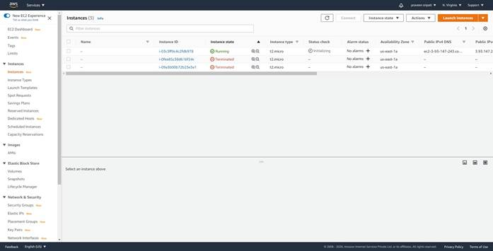
-- All the messages from the Lambda can be observed in the CloudWatch logs as shown below.
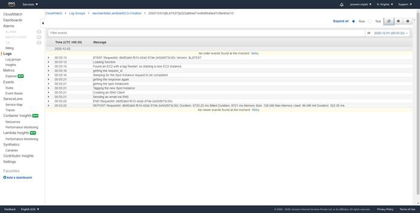
-- Also, we should have got an email when the EC2 has been terminated and a new
one has been started.
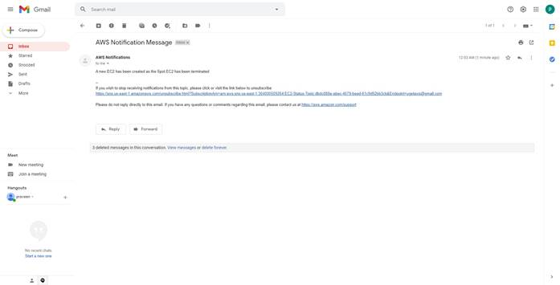
Summary
In the development phase where high availability is not of a concern, we can use the EC2 spot instances to deploy our applications. But the catch is that the spot instances can be terminates at any point of time. One way to get around is to have a Lambda function which automatically launches another EC2.
The main advantage of this approach is that we don’t need to for multiple EC2 instances to increase the availability.